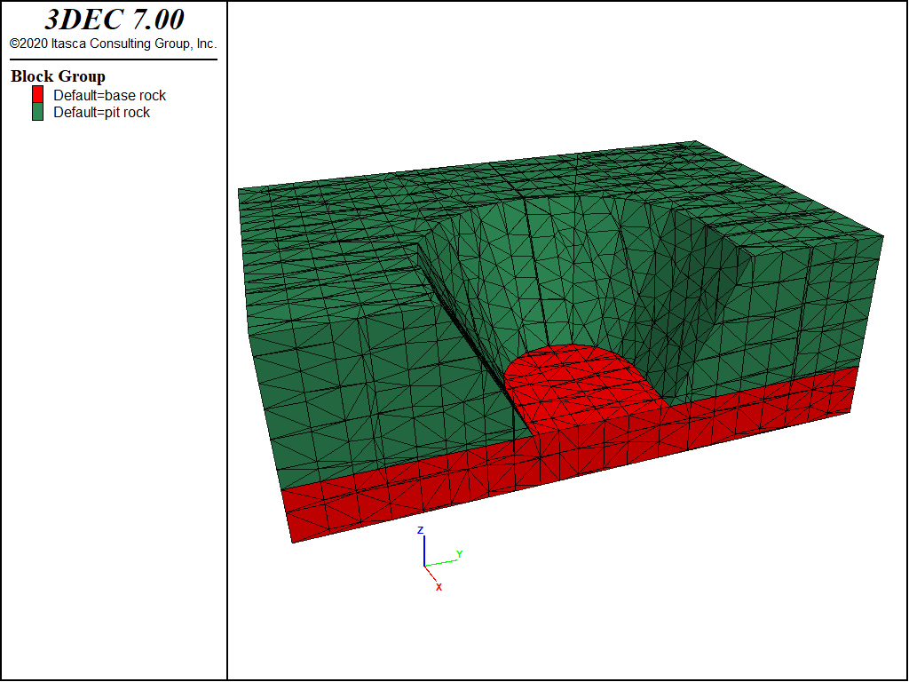
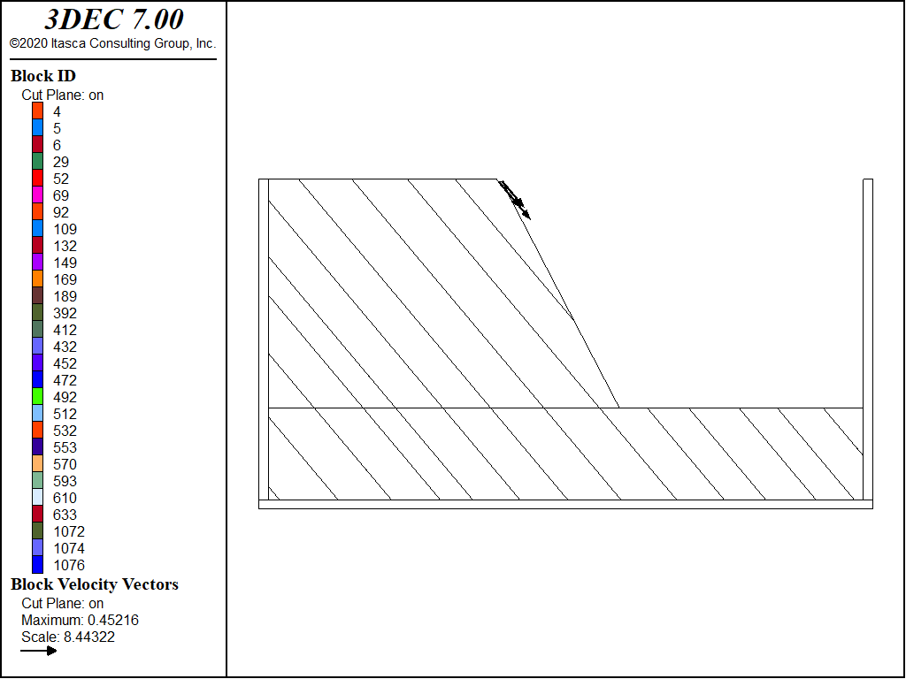
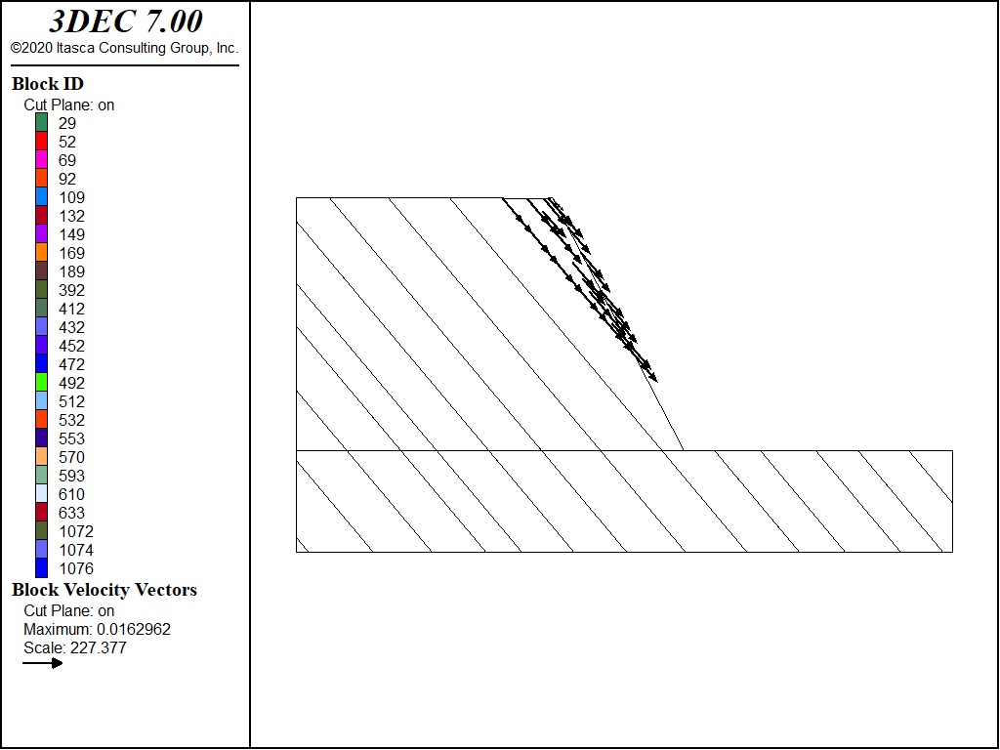
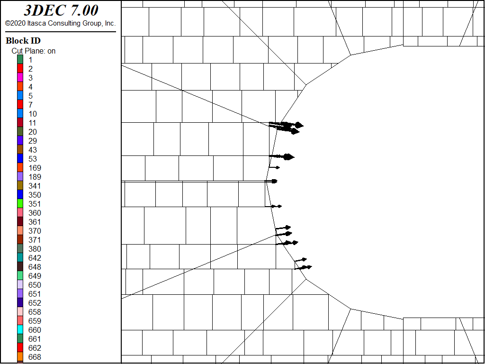
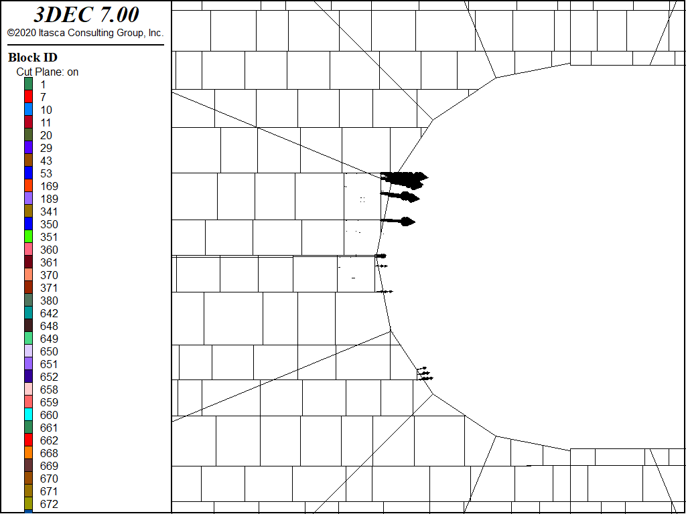
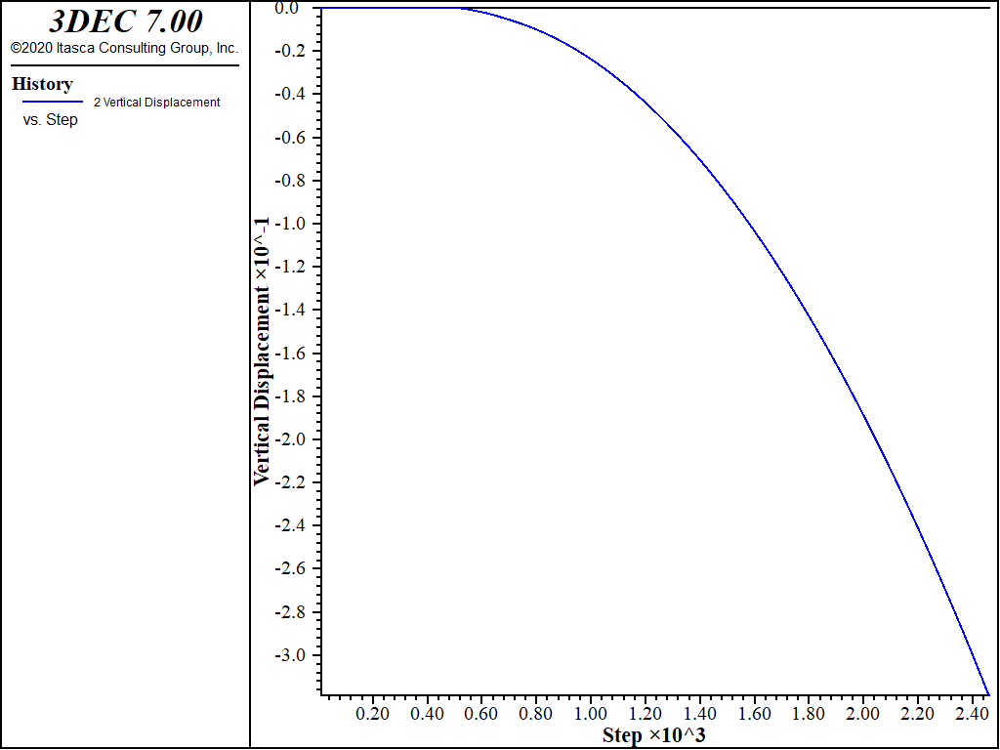
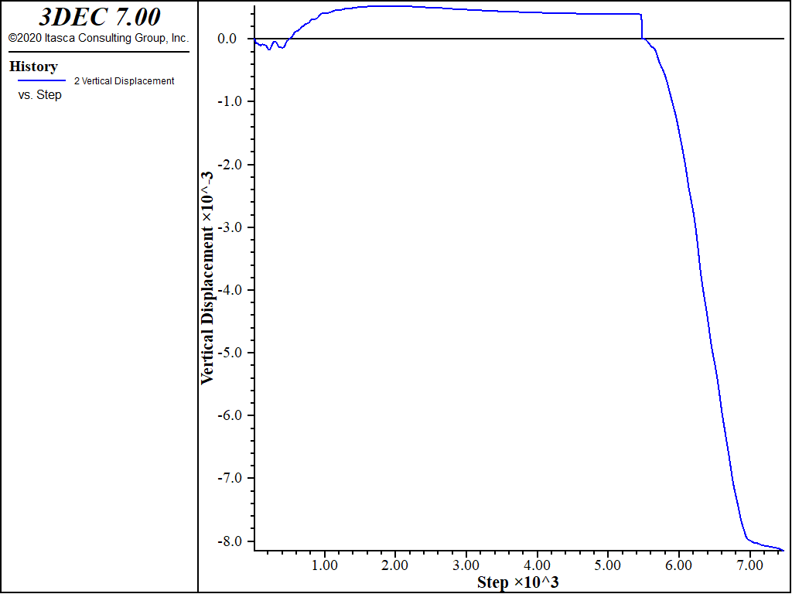

节理岩体中露天矿的稳定性
问题描述
注意
要在 3DEC 中查看此项目，请使用菜单命令 。选择“3DEC/ ExampleApplications/ Open_Pit”，然后选择“pit.prj”进行加载。所用的主数据文件（main data files）显示在本示例的末尾。所有数据文件都可在该项目中找到。
拟在节理岩体中开挖一个露天矿。确定节理对边坡稳定性的影响很重要。尤其关注露天矿弧形段的稳定性，因为节理方位有利于在该处形成滑动楔体。图 1（Figure 1）所示模型代表露天矿的一个半剖面。边坡高度为 25 m，坡角为 63°（约 2 竖比 1 平）。有两组节理，其属性如下：
| 第 1 组 | 第 2 组 | |
| 均值/标准差 | 均值/标准差 | |
| 倾角（°） | 90/0 | 50/0 |
| 倾向（°） | 0/0 | 90/0 |
| 间距（m） | 5/1 | 4/1 |
| 内摩擦角 \(\phi\)（°） | 20 | 20 |


图 1：露天矿的 3DEC 模型——半剖面。
建模步骤
图 1（Figure 1）所示模型由文件“PIT.DAT”生成。在创建露天矿之前，先切割两组节理。然后调用 FISH 文件“PITCR.FIS”以生成浴缸形露天矿的半剖面。为创建该露天矿指定了以下参数：露天矿底面的高程（坑底高程（fyb））；边坡高度（边坡高度（fht））；曲率中心的坐标（曲率中心坐标（fxc,zcyb））；露天矿底面的半径（参数（fr））；弧形段划分的段数（曲线分段数（fn _seg））；以及坡角（边坡角（fslope _ang））。
为便于对比，分别采用刚性块体和可变形块体运行模型。文件“PITR.DAT”恢复由“PIT.DAT”创建的、恰在划分网格之前的模型，以运行刚性块体模型。考虑到主要破坏模式预计为单个块体的滑动，两种模型都应能够预测边坡是否稳定。对于可变形情况，所有块体均划分网格。由于露天矿面附近的应力相对于完整岩石强度较低，假定岩石表现为线弹性材料。
模型四周设置滚轴边界，模型底部固定。在可变形块体情形中，通过 block gridpoint apply 命令在相应方向指定零速度边界条件来实现。在刚性块体模型中，必须通过在模型周围布置固定块体来模拟滚轴边界，这样用户就不必在模型边界处固定大块体。模型侧面与周围块体之间的接触面设为无摩擦，而与底部之间的接触面赋予高强度以模拟固定。
首先在节理黏聚力取高值的情况下使模型达到平衡状态。然后将节理黏聚力降为零，并运行模型 2000 步。用位于露天矿顶缘的位移历史记录监测模型响应。
可变形块体模型包含 964 个块体和 37,820 个网格单元，需要 32 MB 的内存。
结果
刚性块体和可变形块体两种情况下，通过露天矿中心的竖向剖面上的速度图分别如图 2（Figures 2）和3所示。图 4（Figures 4）和5是模型顶部稍下方平面剖面上的速度图。预测露天矿弧形段中心处的若干块体发生滑动。两种情况下预测破坏的区段宽度均约为 25 m。两种情况下露天矿端部顶缘竖向位移的历史记录图分别如图 6（Figures 6）和7所示。位移并未趋于平缓，表明滑动块体并未稳定下来。


图 2：通过露天矿的竖向剖面上速度矢量的 3DEC 图——刚性块体。


图 3：通过露天矿的竖向剖面上速度矢量的 3DEC 图——可变形块体。


图 4：通过露天矿的平面剖面上速度矢量的 3DEC 图——刚性块体。


图 5：通过露天矿的平面剖面上速度矢量的 3DEC 图——可变形块体。


图 6：3DEC 记录的露天矿顶缘竖向位移历史——刚性块体。


图 7：3DEC 记录的露天矿顶缘竖向位移历史——可变形块体。
数据文件
pit.dat
model new
model random 10000
model large-strain on
block tolerance 1e-2
block create brick 75 140 50 150 -10 25
block group 'base rock'
;创建节理组
block cut joint-set dip 90 dip-direction 0 ori 100 100 0 spac 5 1 num 80
block cut joint-set dip 50 dip-direction 90 ori 100 100 0 spac 4 1 num 80
;创建露天坑
program call 'pitcr.fis'
model save 'pit-geometry'
=======================================
;
; 可变形块体模型
;网格单元模型
block zone generate edgelength 4
;
;指定线弹性块体参数和节理参数
block zone cmodel assign elastic
block zone property bulk 2e8 shear 1e8 density 2800
block contact jmodel assign mohr
block contact property stiffness-normal 1e9 stiffness-shear 1e9 ...
cohesion 1e20 friction 20
block contact material-table default property stiffness-normal 1e9 ...
stiffness-shear 1e9 friction 20
;边界条件
block gridpoint apply velocity-x 0.0 velocity-y 0.0 velocity-z 0.0 ...
range position-z -10
block gridpoint apply velocity-x 0.0 range position-x 75
block gridpoint apply velocity-x 0.0 range position-x 140
block gridpoint apply velocity-y 0.0 range position-y 50
block gridpoint apply velocity-y 0.0 range position-y 150
;初始化重力应力
model gravity 0 0 -10
block insitu stress -6.25e5 -6.25e5 -6.25e5 0 0 0 ...
gradient-z 2.5e4 2.5e4 2.5e4 0 0 0
;历程
model history mechanical unbalanced-maximum
block history displacement-z position 101 95 25
history name '2' label 'Vertical Displacement'
;
;达到平衡
model solve
model save 'pit_eq'
;
;降低强度
block contact property cohesion 0
block gridpoint initialize displacement 0 0 0
model cycle 2000
model save 'pit_fl'
;
program return
pitr.dat
model restore 'pit-geometry'
block group 'pit'
;
; 刚性块体模型
;边界条件
block hide
block create brick 74 141 49 50 -10 25
block create brick 74 141 150 151 -10 25
block create brick 74 75 50 150 -10 25
block create brick 140 141 50 150 -10 25
block group 'sides'
block hide
block create brick 74 141 49 151 -11 -10
block group 'bottom'
block hide off range group 'sides'
block fix
block hide off
;初始化重力应力并创建子接触
model gravity 0 0 -10
block insitu stress -6.25e5 -6.25e5 -6.25e5 0 0 0 ...
gradient-z 2.5e4 2.5e4 2.5e4 0 0 0
;指定块体参数和节理参数
block property density 2800
block contact jmodel assign mohr
block contact property stiffness-normal 1e9 stiffness-shear 1e9 ...
cohesion 1e20 friction 20
block contact material-table default property stiffness-normal 1e9 ...
stiffness-shear 1e9 friction 20
block contact property cohesion 0 friction 0 ...
range group-intersection 'pit' 'sides'
block contact property cohesion 1e20 ...
range group-intersection 'pit' 'bottom'
;
;历程
model history mechanical unbalanced-maximum
block history displacement-z position 101 95 25
history name '2' label 'Vertical Displacement'
;达到平衡
model solve
model save 'pitr_eq'
;降低强度
block hide range group 'bottom'
block contact property cohesion 0 tension 0
block hide off
block gridpoint initialize displacement 0 0 0
model cycle 2000
;
model save 'pitr_fl'
program return
pitcr.fis
; 设置露天坑的几何参数
fish auto-create off
fish define parm
global zb=0
global ht=25
global xc=125
global yc=100
global r=12
global n_seg=8.0
global slope_ang=63
global start_az=180
end
[parm]
; 创建露天坑
fish define create_pit
command
block cut joint-set dip 0 dip-direction 0 origin 0 0 [zb]
block hide range plane dip 0 dip-direction 0 origin 0 0 [zb] below
block group 'pit rock'
end_command
local ang_seg=180/n_seg
global xp1=xc+r*math.sin(start_az*math.degrad)
global yp1=yc+r*math.cos(start_az*math.degrad)
global dd_seg=start_az+180+ang_seg/2
loop local i (1,n_seg)
local ang=start_az+ang_seg*(i)
global xp2=xc+r*math.sin(ang*math.degrad)
global yp2=yc+r*math.cos(ang*math.degrad)
global dd_seg=start_az+180+ang_seg/2+ang_seg*(i-1)
global dd_p1r=start_az+90+ang_seg*(i-1)
global dd_p2r=start_az+90+ang_seg*(i)
command
block cut joint-set dip 90 dip-direction [dd_p1r] ...
origin [xp1] [yp1] 0 join
block hide range plane dip 90 dip-direction [dd_p1r] ...
origin [xp1] [yp1] 0 below
block cut joint-set dip 90 dip-direction [dd_p2r] ...
origin [xp2] [yp2] 0 join
block hide range plane dip 90 dip-direction [dd_p2r] ...
origin [xp2] [yp2] 0 above
block cut joint-set dip [slope_ang] dip-direction [dd_seg] ...
origin [xp1] [yp1] [zb] join
block hide range plane dip [slope_ang] dip-direction [dd_seg] ...
origin [xp1] [yp1] [zb] below
block group 'pit excavation'
block hide
block hide off range group 'pit rock'
end_command
xp1=xp2
yp1=yp2
end_loop
global yu=yc+r
global yl=yc-r
command
block cut joint-set dip 90 dip-direction 90 origin [xc] 0 0 join
block hide range plane dip 90 dip-direction 90 origin [xc] 0 0 below
block cut joint-set dip [slope_ang] dip-direction 180 ...
origin 0 [yu] [zb] join
block hide range plane dip [slope_ang] dip-direction 180 ...
origin 0 [yu] [zb] below
block cut joint-set dip [slope_ang] dip-direction 0 ...
origin 0 [yl] [zb] join
block hide range plane dip [slope_ang] dip-direction 0 ...
origin 0 [yl] [zb] below
block group 'pit excavation'
block hide off
block delete range group 'pit excavation'
end_command
end
[create_pit]
⇐ Rough Square Footing on a Cohesive Frictionless Material | Assessment of Fault Slip Potential from Sill Pillar Mining ⇒
| 这些内容对您有帮助吗？… | FLAC3D © 2019, Itasca | 原文更新于 2020 年 10 月 8 日 |